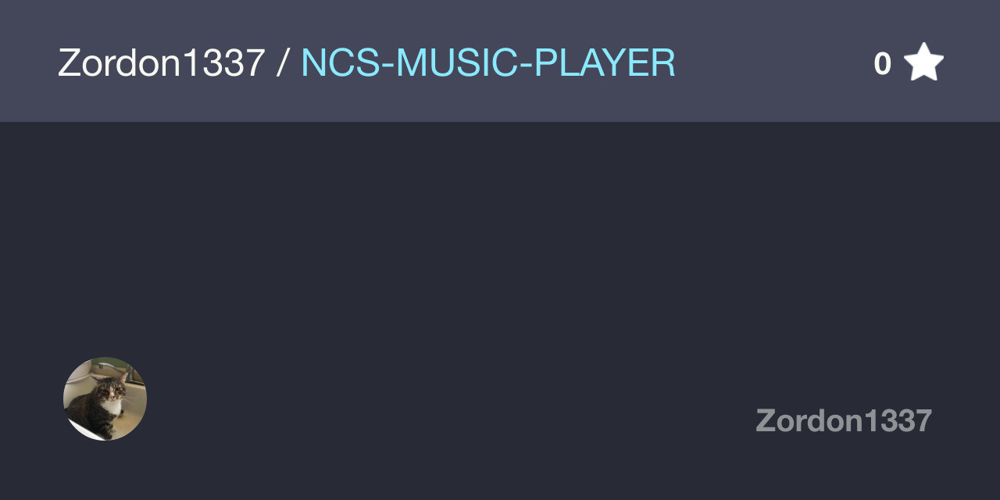
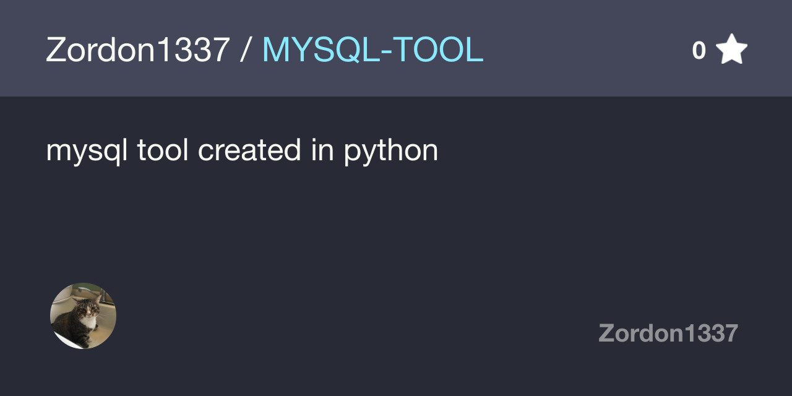
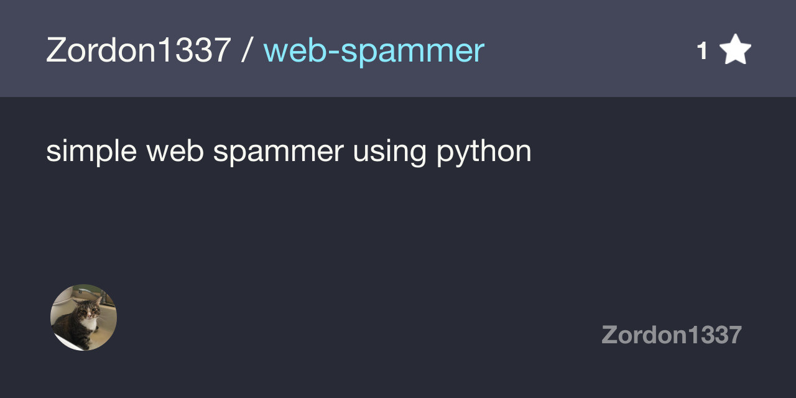
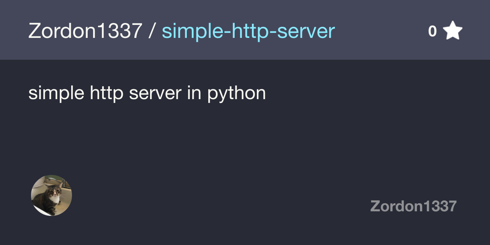
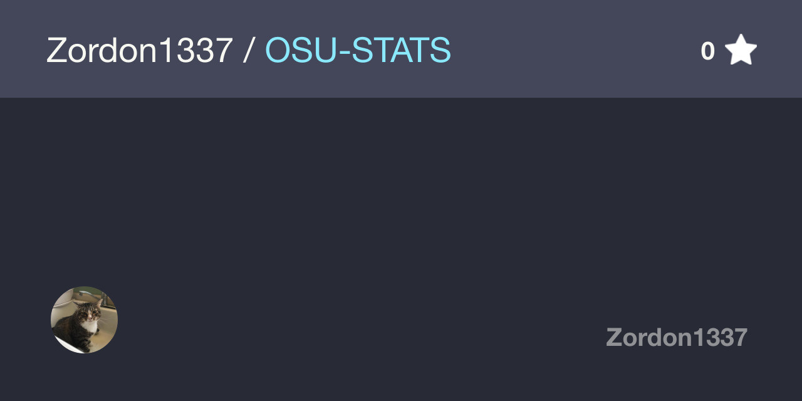
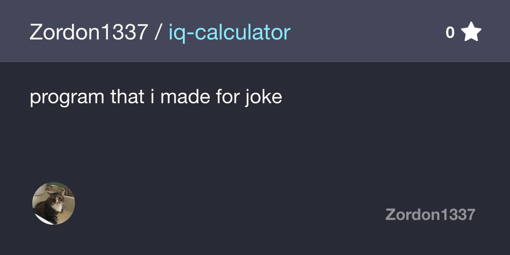

<!DOCTYPE html>
<html>
<head>
<link href='https://fonts.googleapis.com/css?family=Alegreya Sans SC' rel='stylesheet'>
<link rel="stylesheet" href="https://azordon.cf/css/main.css">
<script src="https://ajax.googleapis.com/ajax/libs/jquery/3.1.1/jquery.min.js"></script>
<script src="https://maxcdn.bootstrapcdn.com/bootstrap/3.3.7/js/bootstrap.min.js"></script>
<script>
function cb(response) {
document.getElementById('visits').innerText = response.value;
}
</script>
<script async src="https://api.countapi.xyz/hit/azordon.cf/visits?callback=cb"></script>
<style>
</style>
</head>
<title>Zordon Official Site</title>
</head>
</html>
<div class="topnav">
    <a href="https://azordon.cf/index.html">Home</a>
    <a href="https://azordon.cf/news.html">News</a>
    <a href="https://azordon.cf/contact.html">Contact</a>
    <a href="https://azordon.cf/about.html">About</a>
    <a class="active" href="https://azordon.cf/projects.html">My Github Repos</a>
  </div>

<div class="welcome">
<h1>My Projects on github</h1>
<p> </p>
<h1>Main projects</h1>
<p><p>
<div class="main-projects-github">
<a href="https://github.com/Zordon1337/NCS-MUSIC-PLAYER"></a>
  <a href="https://github.com/Zordon1337/MYSQL-TOOL"></a>
    <a href="https://github.com/Zordon1337/web-spammer"></a>
</div>

<h1>Abandoned project</h1>
<p><p>
<div class="canceled-projects-github">
<a href="https://github.com/Zordon1337/simple-http-server"></a>
  <a href="https://github.com/Zordon1337/OSU-STATS"></a>
    <a href="https://github.com/Zordon1337/iq-calculator"></a>
</div>

<h1>Projects TODO</h1>
<p><p>
<div class="soon-projects-github">
<p>OSU-STATS V2 - i will try do OSU-STATS again because my previous version was my first python project so it failed</p>
<p>Video player - small chances</p>
<p>Aserver.sh - My first attempt to make osu server there is really small chances that i will try even do this</p>
</div>


 

